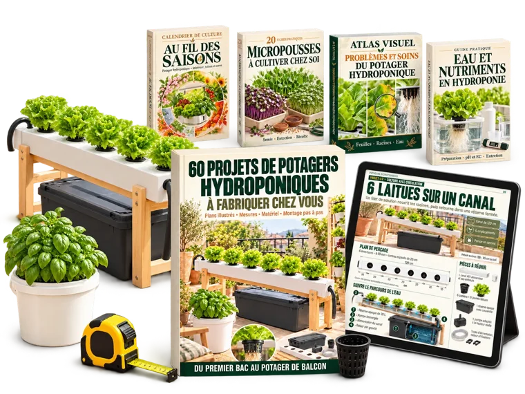
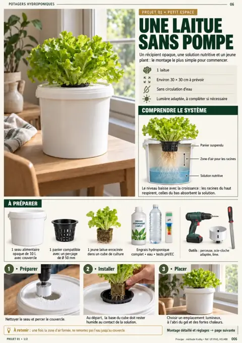
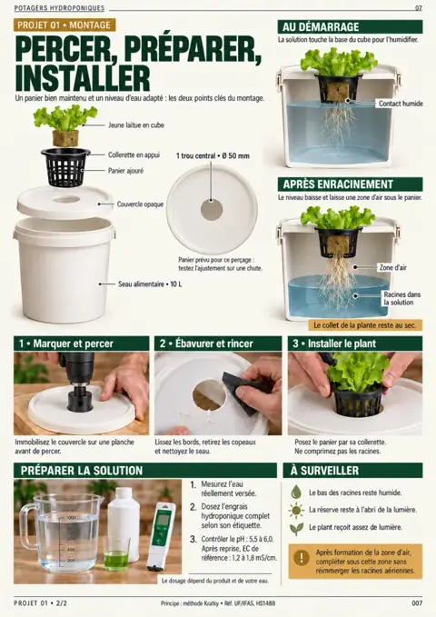
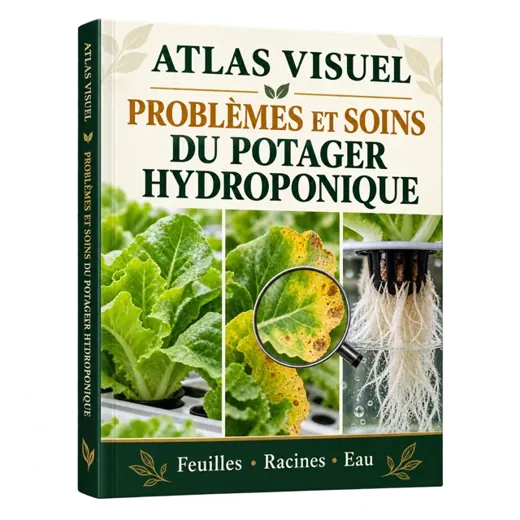
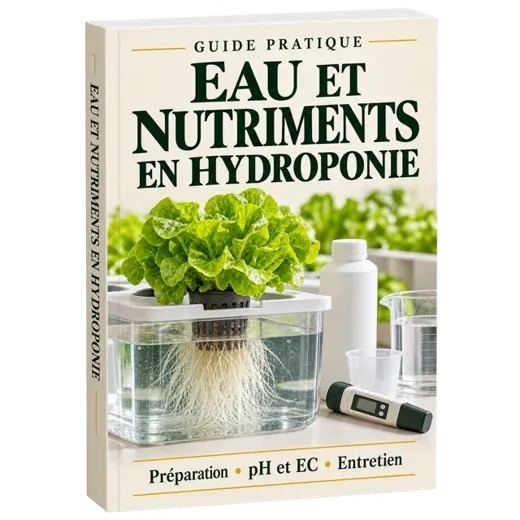
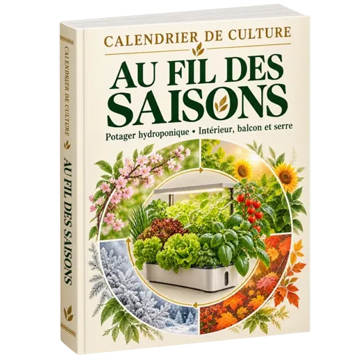
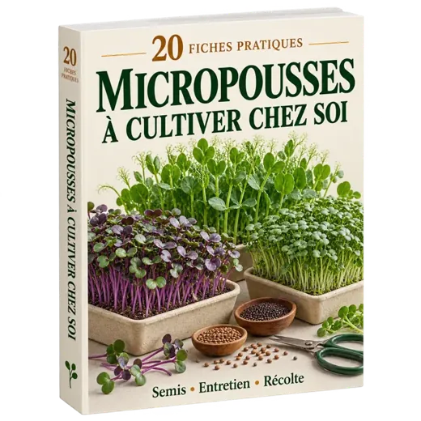
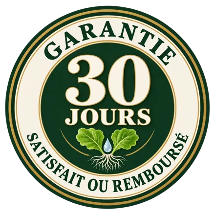

— HYDROPONIE —
Des plans illustrés avec mesures, listes de matériel, découpes et étapes de montage pour réaliser votre installation.

Salades, basilic, fraises ou tomates cerises : choisissez un modèle adapté à votre balcon, votre terrasse ou votre intérieur, réunissez les pièces et suivez le montage pas à pas.
Accès par e-mail après le paiement, à consulter sur téléphone, tablette ou ordinateur et à imprimer.
Touchez une page pour l’agrandir.
Une laitue sans pompe et six laitues sur un canal.
Petits bacs sans pompe pour aromatiques et jeunes plants.
Laitues, basilic, menthe, persil et pak-choïs en bac aéré.
Lignes courtes, angles, plusieurs niveaux et fraisiers.
Colonnes, murs autonomes et solutions pour peu de sol.
Tomates, poivrons, aubergines, concombres et fraises.
Salades, basilics, fraisiers et jeunes plants.
Étagères, potager de balcon et terrasse.


Les dimensions, les découpes et les perçages à préparer avant de commencer.
Les pièces, les raccords et leurs quantités, pour acheter juste ce qu’il faut.
Des schémas et des étapes en images pour comprendre comment tout s’assemble.
Un guide de démarrage : eau, nutriments, pH et conductivité expliqués simplement.
Balcon, terrasse, jardin ou intérieur : chaque projet indique ses conditions d’installation.
Les 60 projets réunis dans un dossier, avec un index par culture et par espace.
Ayez 60 projets avec mesures, matériel, découpes et montage réunis au même endroit, à consulter chaque fois que vous voulez monter une nouvelle installation.
Commencer par un modèle simple, sans pompe, puis passer aux systèmes plus complets.
Laitues, basilic, menthe, persil, fraises ou tomates cerises, à portée de main.
Comparer plusieurs modèles et choisir celui qui convient à votre balcon ou votre intérieur.
Arriver au magasin de bricolage avec la liste des pièces et les mesures.
Éviter de tout planifier de zéro : le projet indique quoi couper, percer et assembler.
Réaliser une installation solide et soignée, en suivant un pas-à-pas illustré.
Dossier numérique en PDF : aucun kit physique n’est envoyé. Les matériaux, les outils, les graines et les équipements de culture sont à acheter séparément.
Avec votre accès, vous recevez aussi 4 guides pour cultiver et entretenir votre potager.
🎁 4 BONUS INCLUS
🎁 BONUS 1Reconnaissez les signes sur les feuilles, les racines et l’eau, vérifiez les causes possibles et consultez les soins à apporter.

🎁 BONUS 2Préparez la solution nutritive, mesurez et ajustez le pH et l’EC, et sachez quand compléter ou renouveler la réserve.

🎁 BONUS 3Sachez quoi cultiver et quand commencer, selon la saison et votre installation : intérieur, balcon ou serre.

🎁 BONUS 4Une fiche par variété, du semis à la récolte, pour cultiver des micropousses dans un tout petit espace.
Pour monter votre installation et savoir ensuite comment la cultiver et l’entretenir.
Paiement unique. Sans abonnement.
Je veux mon accès →Un seul paiement, et les 60 projets restent réunis dans un même dossier pour toutes vos prochaines réalisations.

Consultez les projets, les plans et les listes de matériel pendant les 30 jours suivant votre achat.
Si le dossier ne vous convient pas, contactez notre support dans ce délai pour demander le remboursement.
Téléchargez et consultez vos projets quand vous voulez.
Finalisez votre paiement en toute sécurité.
Après la confirmation du paiement, vous recevez le lien d’accès par e-mail.
Un dossier numérique en PDF avec 60 projets, leurs plans et les indications de réalisation. Aucun kit physique n’est envoyé.
Non. Le guide de démarrage présente les bases (eau, nutriments, lumière) et chaque projet précise sa difficulté et les conditions nécessaires. Vous pouvez commencer par un modèle sans pompe.
Les mesures, le matériel, les découpes, le montage illustré et les indications de mise en route et d’entretien.
Non. La plupart des projets se réalisent avec des outils simples pour mesurer, couper et percer. Chaque projet indique ce qui est nécessaire.
Cela dépend du modèle. La collection comprend des configurations passives, sans pompe, et des systèmes avec circulation ou aération. Chaque projet précise les équipements nécessaires.
Les projets utilisent des bacs, tubes, raccords et paniers que l’on trouve en magasin de bricolage, en jardinerie ou en ligne. Suivez les quantités et les spécifications du projet : les composants doivent être compatibles entre eux et adaptés aux plantes alimentaires.
Oui, avec un projet adapté et une lumière suffisante. Un éclairage horticole peut être nécessaire selon l’emplacement.
Les fiches indiquent les plantes compatibles avec chaque projet : salades, plantes aromatiques, fraises, tomates cerises, poivrons et plus encore.
Cela dépend de la région, des plantes, de la lumière et de la température. Les projets indiquent les conditions à prendre en compte.
Oui. Les PDF se consultent sur téléphone, tablette ou ordinateur, et vous pouvez imprimer les pages du projet que vous réalisez.
Oui. Votre accès comprend les 60 projets complets et les quatre bonus : l’atlas des problèmes et soins, le guide eau et nutriments, le calendrier de culture et les 20 fiches micropousses.
Vous disposez de 30 jours après l’achat pour consulter le dossier et demander un remboursement auprès du support s’il ne vous convient pas.